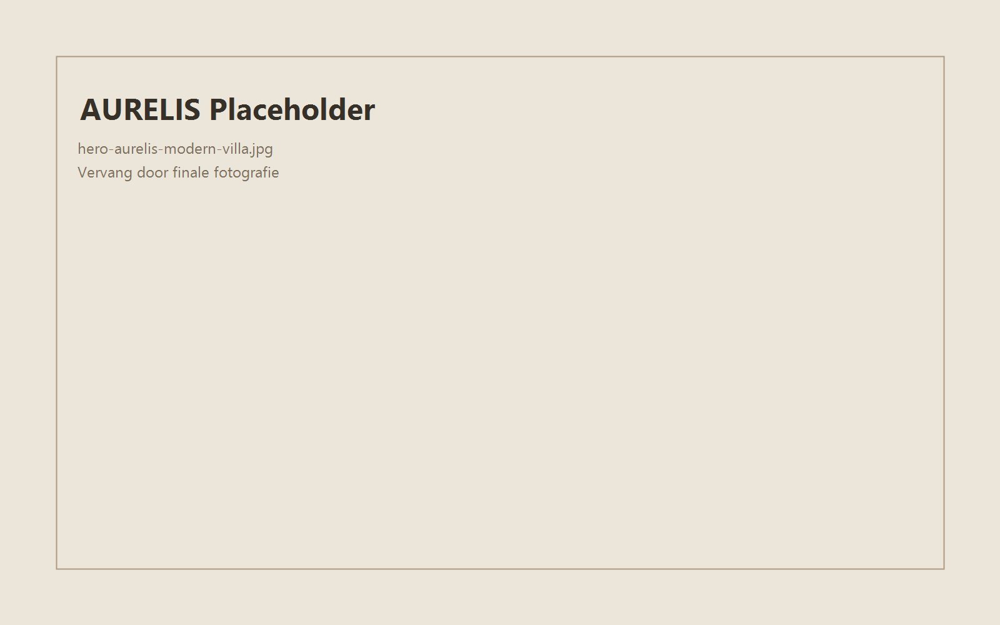

Maatwerk
Websites op maat
Een digitale ervaring rond jouw doelgroep, aanbod en gewenste acties. Geen standaardtemplate met andere kleuren.
Diensten
Van maatwerk en vindbaarheid tot automatisering en nazorg. Kies de oplossing die jouw onderneming vooruithelpt.
LWS / 01Wat jouw onderneming nodig heeft
Niet ieder project vraagt hetzelfde. Daarom combineren we alleen de strategie, techniek en ondersteuning die waarde toevoegen.
Maatwerk
Een digitale ervaring rond jouw doelgroep, aanbod en gewenste acties. Geen standaardtemplate met andere kleuren.
E-commerce
Heldere productpresentatie en een aankooproute die ook mobiel logisch blijft.
Technische basis
Een duidelijke websitestructuur die bezoekers én zoekmachines helpt begrijpen wat je aanbiedt.
Slimmer werken
Formulieren, e-mails en ondersteunde koppelingen die repetitieve stappen kunnen vereenvoudigen.
Veilige toegang
Persoonlijke content, documenten en statussen voor de juiste gebruikers.
Eén ervaring
Fotografie, video, maps en sociale kanalen samengebracht rond jouw merk.
Onder de motorkap
Snelheid, veilige verwerking en technische zorg die bezoekers niet zien, maar wel voelen.
Na de lancering
Technische opvolging, aanpassingen en verdere ontwikkeling wanneer je website groeit.
De lat ligt hoger
Een professionele website moet ook snel, duidelijk, technisch correct, mobiel bruikbaar en uitbreidbaar zijn. Design trekt aandacht. De juiste basis zet die aandacht om in vertrouwen en actie.

Waarom Lorenzo Web Solutions?
Jij kent je onderneming.
Vertel wat je wilt bereiken. Dan bekijken we welke digitale basis daarbij past.